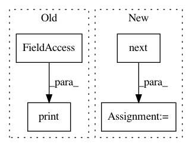

f2073333b710a340403843763ba60eb1e6699916,examples/data_process/tutorial_tfrecord2.py,,,#,81
Before Change
for i in range(3): // number of mini-batch (step)
print("Step %d" % i)
val, l = sess.run([img_batch, label_batch])
print(val.shape, l)
tl.visualize.images2d(val, second=1, saveable=False, name="batch" + str(i), dtype=np.uint8, fig_idx=2020121)
tl.vis.save_images(val, [2, 2], "_batch_%d.png" % i)
coord.request_stop()
After Change
label_batch = tf.cast(features["label"], tf.int32)
yield img_batch, label_batch
img_batch, label_batch = next(read_and_decode("train.tfrecords"))
print("img_batch : %s" % img_batch.shape)
print("label_batch : %s" % label_batch.shape)
i = 0
In pattern: SUPERPATTERN
Frequency: 3
Non-data size: 4
Instances
Project Name: tensorlayer/tensorlayer
Commit Name: f2073333b710a340403843763ba60eb1e6699916
Time: 2019-04-11
Author: rundi_wu@pku.edu.cn
File Name: examples/data_process/tutorial_tfrecord2.py
Class Name:
Method Name:
Project Name: modAL-python/modAL
Commit Name: caec2c73aad40c0e632e978964ec5c3cf4773c9e
Time: 2019-06-02
Author: theodore.danka@gmail.com
File Name: examples/pytorch_integration.py
Class Name:
Method Name:
Project Name: cornellius-gp/gpytorch
Commit Name: 2ff35c739f8906da80c83ff8b08234981b8791dc
Time: 2019-10-29
Author: jrg365@cornell.edu
File Name: gpytorch/kernels/kernel.py
Class Name: Kernel
Method Name: __getitem__